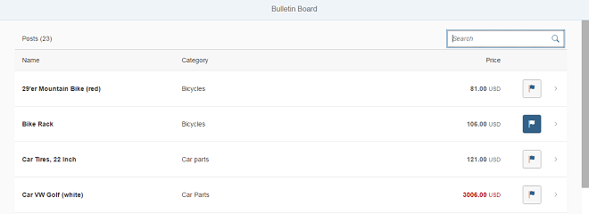

Step 12: Adding a Search
We now add a search field to our bulletin board and define a filter that represents the search term. This is done similarly as in step 24 of the Walkthrough tutorial.
Preview

Search fieldCoding
You can view and download all files in the Samples in the Demo Kit at Testing - Step 12.
webapp/view/Worklist.view.xml
...
<Table
id="table"
width="auto"
class="sapUiResponsiveMargin"
growing="true"
items="{
path: '/Posts',
sorter: {
path: 'Title',
descending: false
}
}"
busyIndicatorDelay="{worklistView>/tableBusyDelay}"
updateFinished=".onUpdateFinished">
<headerToolbar>
<Toolbar>
<Label id="tableHeader" text="{worklistView>/worklistTableTitle}"/>
<ToolbarSpacer />
<SearchField id="searchField" width="auto" search=".onFilterPosts" />
</Toolbar>
</headerToolbar>
...
We add a ToolbarSpacer and a SearchField to the headerToolbar of our table.
webapp/controller/Worklist.controller.js
sap.ui.define([ './BaseController', 'sap/ui/model/json/JSONModel', '../model/formatter', '../model/FlaggedType', 'sap/m/library', "sap/ui/model/Filter", "sap/ui/model/FilterOperator" ], function (BaseController, JSONModel, formatter, FlaggedType, mobileLibrary, Filter, FilterOperator) { "use strict"; ... onUpdateFinished: function (oEvent) { // update the worklist's object counter after the table update var sTitle, oTable = oEvent.getSource(), iTotalItems = oEvent.getParameter("total"); // only update the counter if the length is final and // the table is not empty if (iTotalItems && oTable.getBinding("items").isLengthFinal()) { sTitle = this.getResourceBundle().getText("worklistTableTitleCount", [iTotalItems]); } else { sTitle = this.getResourceBundle().getText("worklistTableTitle"); } this.getModel("worklistView").setProperty("/worklistTableTitle", sTitle); }, onFilterPosts: function (oEvent) { // build filter array var aFilter = []; var sQuery = oEvent.getParameter("query"); if (sQuery) { aFilter.push(new Filter("Title", FilterOperator.Contains, sQuery)); } // filter binding var oTable = this.byId("table"); var oBinding = oTable.getBinding("items"); oBinding.filter(aFilter); }, ...
To enable filtering, we extend the controller with a method that applies the search term entered in the search field to the list binding, similarly as we did for InvoiceList.controller.js in step 24 of the Walkthrough tutorial.